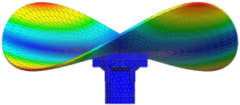
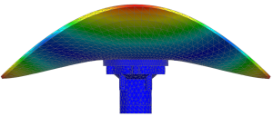

Verify the model
You can use the standard results .op2 file that accompanies the superelement .op2 file to verify your model.
 Post-Processing Navigator
Post-Processing Navigator
-
 extse
extse -
 Load
Load -
 extse (expand)
extse (expand)
-
Mode 1 (expand)
-
Displacement – Nodal (expand)
-
 Magnitude
Magnitude
-
Because the defined boundary DOFs are constrained during the modal reduction solution, no rigid body modes exist.
 Next Mode/Iteration (Post Processing toolbar)
Next Mode/Iteration (Post Processing toolbar)

Use the Next Mode/Iteration  command to view additional modes.
command to view additional modes.
Examine the glue connection to ensure that there are no gaps.
Examine the constrained DOFs at the location of the boundary nodes to ensure that all four boundary nodes are constrained.
When you finish looking at the results, return to the model.
 Return to Model (Layout Manager toolbar)
Return to Model (Layout Manager toolbar)
 File→Close→All Parts
File→Close→All Parts